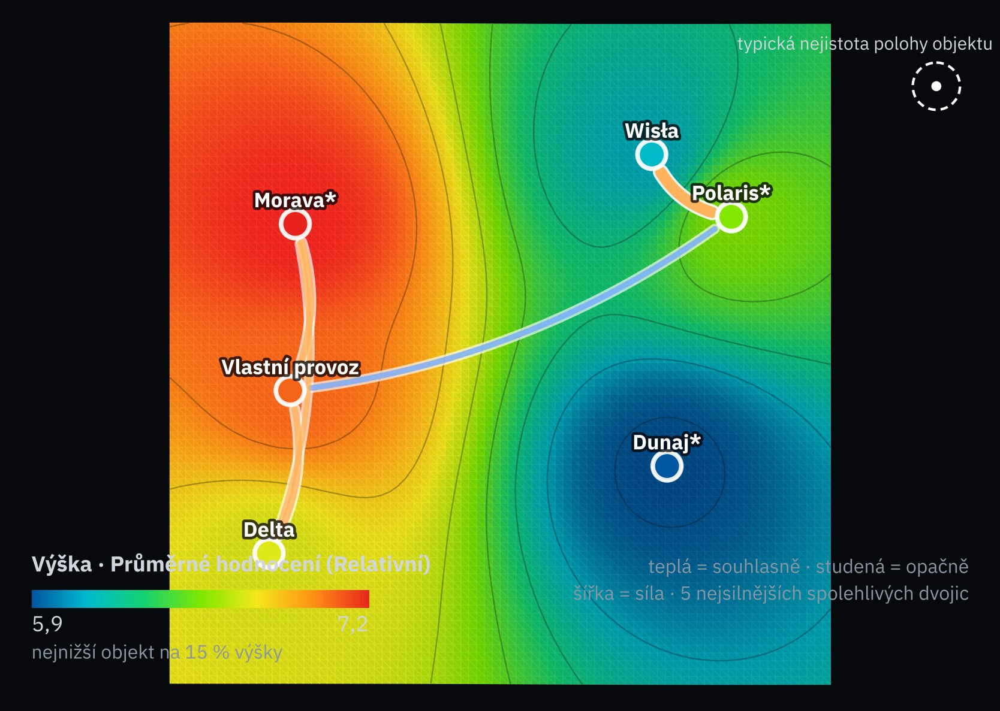
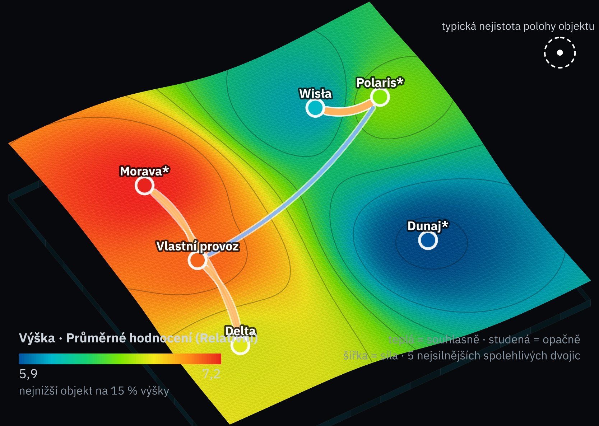
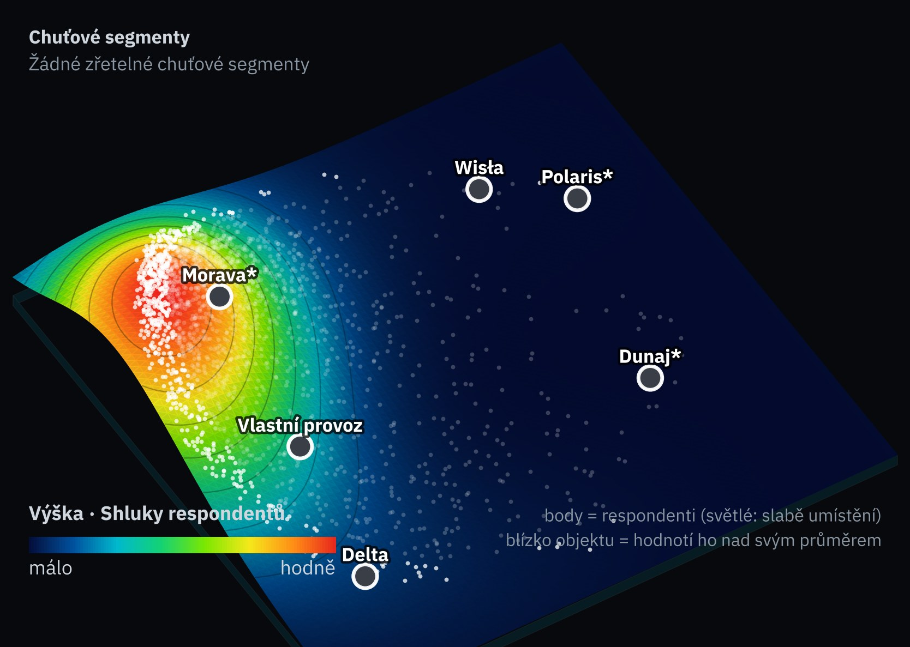

Koho mapa porovná
6 skladů pro e-shop Velis| Dodavatel | Sklad | Proč na mapě | Podklad |
|---|---|---|---|
| Delta Fulfillment CZ | Modřice | dnešní 3PL | smlouva, faktury 2025 |
| Wisła Fulfilment | Katovice | nabídka C | nabidka_3PL_PL.pdf |
| Vlastní provoz Velis | Jihlava | hala A | nabidka_hala.pdf |
| Morava Fulfil* | Ostrava | našla Rešerše | veřejný ceník a podmínky* |
| Polaris Logistyka* | Wrocław | našla Rešerše | veřejný ceník* |
| Dunaj 3PL* | Bratislava | našla Rešerše | jen web* |
* Smyšlení dodavatelé pro ukázku. V ostré studii je najde Rešerše a u každé hodnoty bude citace. Rychlík Kurýr na mapě není: je to dopravce, ne sklad.
Brána a co se změnilo proti verzi 1
slib ve městech se nekompenzuje| Brána | Delta | Wisła | Vlastní | Morava* | Polaris* | Dunaj* |
|---|---|---|---|---|---|---|
| G1 Slib ve velkých městech: do 1 dne, sám nebo s expresním partnerem Zadání · podmínka OR | splněno smlouva s. 3 | splněno s expresem: nabidka_kuryr_expres | splněno úsudek: Jihlava | splněno web* | neznámo 2 dny, expresní partner nedoložen | neznámo 2 dny (úsudek), partner nedoložen |
| Ve verzi 1 | Teď | Proč |
|---|---|---|
| L1 Vzdálenost od Prahy | vypuštěno | vzdálenost už je v S1 (dny doručení) a v C1 (svoz) |
| R1 · pravidlo 6 Nic nehlášeno = 8 | neznámo | chybějící záznam není bezchybná historie |
| C2 · pravidlo 5 Nezveřejněná indexace = medián | neznámo | mlčení dodavatele není průměr trhu |
Váhy: swing weighting
schválil VN 4. 11. před prvním skóre| Kritérium (výkyv od nejhorší k nejlepší možnosti) | VN · schvaluje | FR | OR |
|---|---|---|---|
| Cena | 100 b. · 26 % | 100 b. · 30 % | 60 b. · 16 % |
| Rychlost doručení | 80 b. · 21 % | 50 b. · 15 % | 100 b. · 27 % |
| Kapacita | 40 b. · 10 % | 30 b. · 9 % | 50 b. · 14 % |
| Smluvní podmínky | 50 b. · 13 % | 60 b. · 18 % | 30 b. · 8 % |
| Spolehlivost | 60 b. · 16 % | 50 b. · 15 % | 70 b. · 19 % |
| Služby navíc | 30 b. · 8 % | 15 b. · 4 % | 50 b. · 14 % |
| Měna (PESTEL E) | 20 b. · 5 % | 30 b. · 9 % | 10 b. · 3 % |
Swing weighting: každý z vedení seřadí výkyvy od nejhorší k nejlepší možnosti, největšímu dá 100 bodů a ostatním poměrem. Váha = body / součet. Platí váhy vlastníka rozhodnutí, schválené spolu s hodnotovými škálami před prvním skóre; váhy ostatních jsou test citlivosti.
Katalog indikátorů: mapa dodavatelů
7 kritérií · 10 indikátorůKaždý dílek je jedno pásmo nebo situace: nahoře rozsah, uprostřed skóre 1–10, dole možnosti, které do něj padly. Hodnota přesně na hranici dostane lepší skóre. Čárkovaný dílek: bez dokladu, jen rozsah, který by buňka mohla mít. Škály schválil vlastník rozhodnutí spolu s vahami.
Matice skóre
skóre 1–10 · jistota · rozsah u neznámých| Brána / kritérium · indikátor | Delta | Wisła | Vlastní | Morava* | Polaris* | Dunaj* |
|---|---|---|---|---|---|---|
| G1 Slib ve velkých městech: do 1 dne, sám nebo s expresním partnerem | splněno | splněno | splněno | splněno | neznámo | neznámo |
| C1 Provozní náklad na objednávku vč. skladného (Kč) | 4V57,7 | 8V47,6 | 8S47,1 | 6S52 | 10S44 | ?2–10 |
| C2 Roční indexace (%) | 4V5 | 8V3 | 4N4,5 | ?2–10 | 6S3,5 | ?2–10 |
| Cena · váha 26,3 % | 4,0 | 8,0 | 6,0 | 4,0–8,0 | 8,0 | 2,0–10,0 |
| S1 Doručení do velkých měst (dny) | 9V1 | 5V2 | 9S1 | 9S1 | 5S2 | 5N2 |
| S2 Uzávěrka expedice (hodina) | 8V14 | 6V13 | 10N15 | 10S15 | 4S12 | ?4–10 |
| Rychlost doručení · váha 21,1 % | 8,5 | 5,5 | 9,5 | 9,5 | 4,5 | 4,5–7,5 |
| K1 Kapacita / potřeba 2032 | ?2–10 | 8V1,12 | 4V0,83 | 6S0,9 | 10S1,4 | ?2–10 |
| Kapacita · váha 10,5 % | 2,0–10,0 | 8,0 | 4,0 | 6,0 | 10,0 | 2,0–10,0 |
| P1 Checklist podmínek (z 5) | 10V5 z 5 | 4,6V2 z 5 | n/aneuplatní se | 6,4–10S3 ano · 0 ne · 2 ? | 4,6–10S2 ano · 0 ne · 3 ? | 2,8–10N1 ano · 0 ne · 4 ? |
| Smluvní podmínky · váha 13,2 % | 10,0 | 4,6 | — | 6,4–10,0 | 4,6–10,0 | 2,8–10,0 |
| R1 Výpadky za 3 roky | 9V | ?5–9 | 5N | 5S | ?5–9 | ?5–9 |
| R2 Riziko dodavatele podle manažerů | 6,4V | 5V | 8,4V | ?1–10 | ?1–10 | ?1–10 |
| Spolehlivost · váha 15,8 % | 7,7 | 5,0–7,0 | 6,7 | 3,0–7,5 | 3,0–9,5 | 3,0–9,5 |
| V1 Checklist služeb (z 4) | 7,8V3 z 4 | 3,2–7,8V1 ano · 1 ne · 2 ? | 10S4 z 4 | 7,8–10S3 ano · 0 ne · 1 ? | 5,5–7,8S2 ano · 1 ne · 1 ? | 3,2–10N1 ano · 0 ne · 3 ? |
| Služby navíc · váha 7,9 % | 7,8 | 3,2–7,8 | 10,0 | 7,8–10,0 | 5,5–7,8 | 3,2–10,0 |
| L2 Měna fakturace | 9V | 5V | 9V | 9V | 4V | 5V |
| Měna (PESTEL E) · váha 5,3 % | 9,0 | 5,0 | 9,0 | 9,0 | 4,0 | 5,0 |
| Doložené minimum (neznámé na dolní mezi) | 6,67 | 6,02 | 7,28 | 6,09 | 5,83 | 3,05 |
| Horní případ (neznámé na horní mezi) | 7,51 | 6,69 | 7,28 | 8,50 | 7,74 | 9,13 |
| Pokrytí vah doklady | 90 % | 88 % | 100 % | 72 % | 74 % | 20 % |
Pořadí a testy citlivosti
doložené minimum · rozsah · pět rodin| Co se mění | Delta | Wisła | Vlastní | Morava* | Polaris* | Dunaj* |
|---|---|---|---|---|---|---|
| váhy · 903 nastavení váhy tří lidí z vedení a Dirichlet kolem schválených (koncentrace 20, 60, 200) | 2 % | 1 % | 95 % | 0 % | 2 % | 0 % |
| důkazy · 900 nastavení šum skóre podle jistoty dokladu, tři rozptyly (Vysoká 0,1–0,5 bodu, Střední 0,5–1,5, Nízká 1–2,5) | 9 % | 0 % | 91 % | 1 % | 0 % | 0 % |
| chybějící údaje · 900 nastavení každá neznámá buňka kdekoli ve svém rozsahu | 16 % | 0 % | 30 % | 48 % | 3 % | 2 % |
| struktura · 3 nastavení jiné obhajitelné stavby: lineární škály, bez R1 | 0 % | 0 % | 100 % | 0 % | 0 % | 0 % |
| vše najednou · 2000 nastavení vše výše zároveň, střední nastavení | 10 % | 0 % | 30 % | 48 % | 11 % | 2 % |
Číslo je podíl testovaných nastavení, ve kterých je možnost první mezi těmi, které brány nevyřadily. Nastavení i jejich počty volíme my: je to citlivost, ne pravděpodobnost. Budoucí výsledky firmy tu nesimulujeme; jsou ve Výsledcích a E1 a R1 je odtud čtou.
Mapa testovaných nastavení
aia-sociomap-5 · 2 000 nastavení jako řádky · 6 objektů


Jak mapu číst
Spočítal engine aia-sociomap-5 a nakreslil renderer AIA, kterým zpráva kreslí mapy; v pohledu s body engine nazývá nastavení respondenty. Objekt vyřazený bránou je na mapě pro srovnání. Mapu profilu ze 7 kritérií nekreslíme: z tak málo řádků engine nespočítá věrohodnost ani jednu spolehlivou dvojici. Mapa zůstává interní.